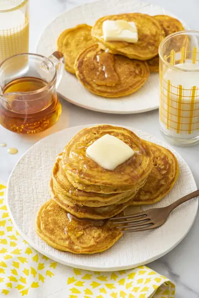

Vegan Pumpkin Pancakes

Ingredients
- 1 cup all purpose flour
- 1/2 cup whole wheat flour
- 2 teaspoons baking powder
- 1 teaspoon baking soda
- 1/2 teaspoon cinnamon
- 1/2 teaspoon kosher salt
- 1 1/4 cups almond, oat, soy or other plant based milk of choice
- 1 tablespoon maple syrup, plus more for serving
- 1 tablespoon vegetable oil, plus more for greasing
- 1/2 cup pumpkin puree
Steps
- Mix the dry ingredients in a bowl.
- Mix the wet ingredients in a separate bowl.
- Add the wet ingredients to the dry ingredients and whisk to combine (don’t over mix, some lumps are fine).
- Heat a griddle or large saute pan over medium heat and lightly
- grease with oil.
- Ladle as many pancakes as possible (about 2 tbsp of batter for each one) on the griddle and cook 2 minutes or until bubbles start forming on the surface and the bottom is golden brown.
- Flip the pancakes and cook another 2 minutes.
- Repeat the process until you run out of batter (you can hold the finished pancakes in a 250 degree oven while you finish making the pancakes).
- Serve with maple syrup and enjoy.
Recipe by Weelicious, from Weelicious. Saved here for personal use; the original has the full notes, tips and photos. Open original